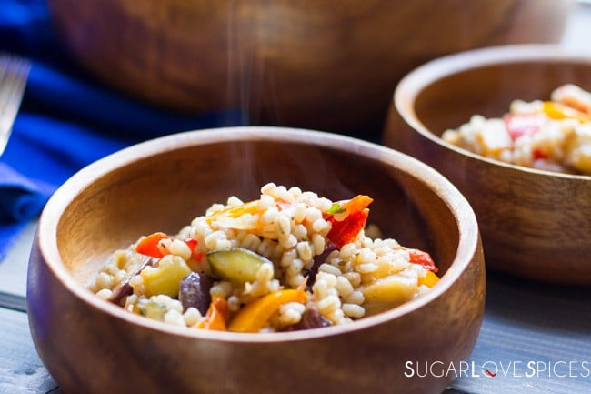

Barley and Vegetable Medley

Description
Barley is a nutritious and tasty whole grain and one of the oldest to be cultivated. It's often used in soups, stews and salads.
In this recipe, we'll use pearl barley, a form in which the bran layer has been polished, making it quicker to cook. Vegetables
mix very well with barley, so we'll use them to make a heathy and quick meal.
Ingredients
- Pearled barley - 1 cup, rinsed
- Water or vegetable broth - 3 cups
- Carrots - 2 medium, diced
- Zucchini - 1 medium, diced
- Spinach - 2 cups, fresh
- Olive oil - 1-2 tablespoons
- Fresh parsley - a handful, chopped
- Lemon zest - 1 teaspoon
- Salt - to taste
- Ground turmeric - 1/2 teaspoon
Recipe
- In a medium saucepan, bring the water or vegetable broth to a boil.
- Add the rinsed barley, reduce the heat to low, cover, and simmer for about 25-30 minutes, or until the barley is tender
and has absorbed most of the liquid. If needed, drain any excess liquid.
- While the barley is cooking, heat the olive oil in a large skillet over medium heat.
- Add the diced carrots and cook for about 5 minutes, until they begin to soften.
- Add the zucchini and cook for another 3-4 minutes, stirring occasionally.
- Stir in the spinach and cook until wilted, about 2 minutes.
- Once the barley is cooked, add it to the skillet with the vegetables.
- Sprinkle in the ground turmeric, and stir to combine.
- Add the lemon zest and chopped parsley, mixing everything together.
- Season with a small amount of salt, if desired.
- Transfer the barley and vegetable medley to serving plates.
- Optionally, drizzle with a little extra olive oil and garnish with additional parsley.
- Bon appetit!
Other Recipes